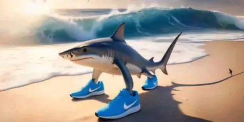

Tralalero tralala
Tralalero Tralala is a blue shark with three legs, blue Nike sneakers, sunglasses and a New York Yankees cap, in a beach setting. Tralalero Tralala is a viral trend originating in Italy and popularized on platforms such as TikTok, YouTube Shorts and Instagram Reels, based on "brainrot" content, a type of absurd, repetitive and addictive digital entertainment.